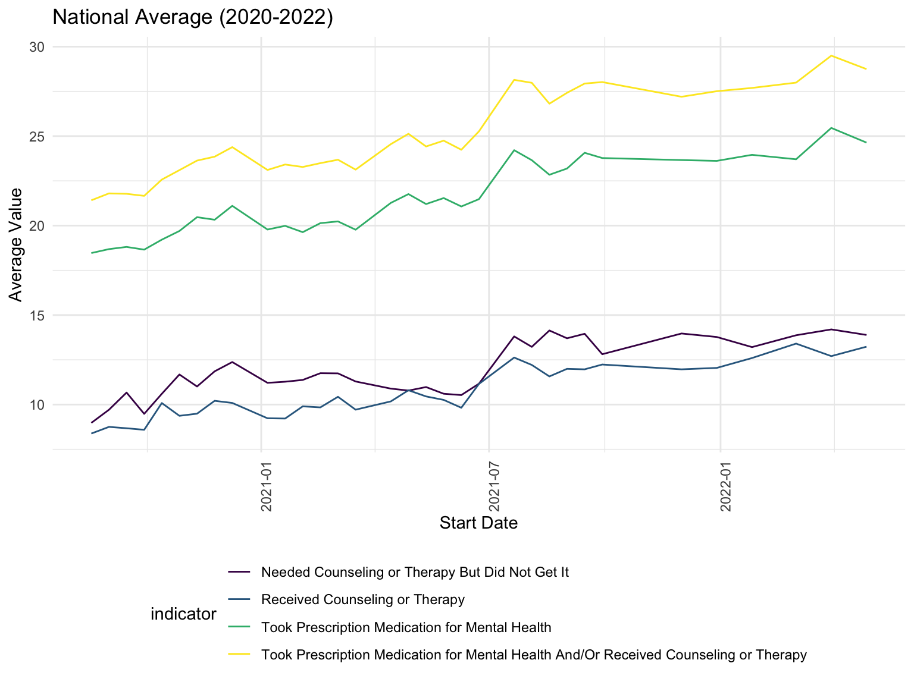
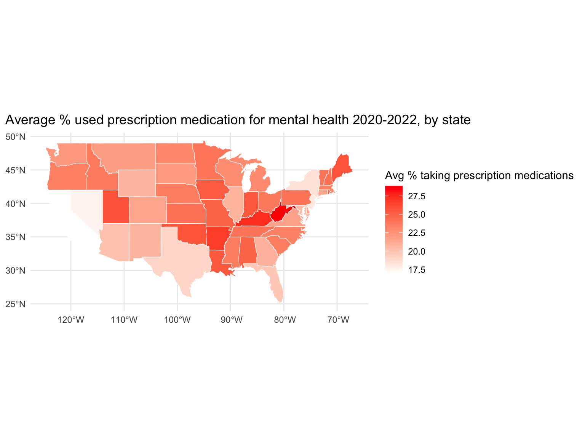
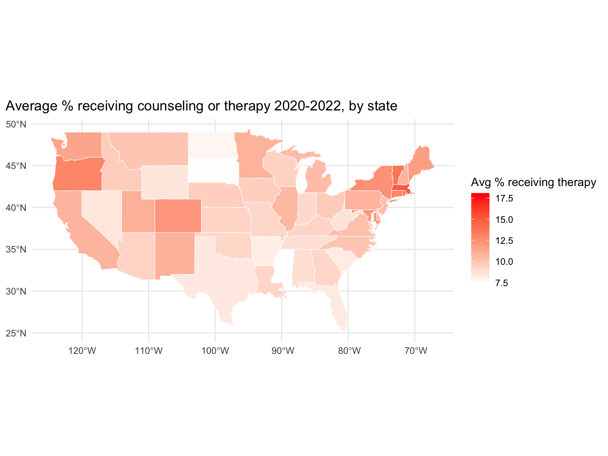
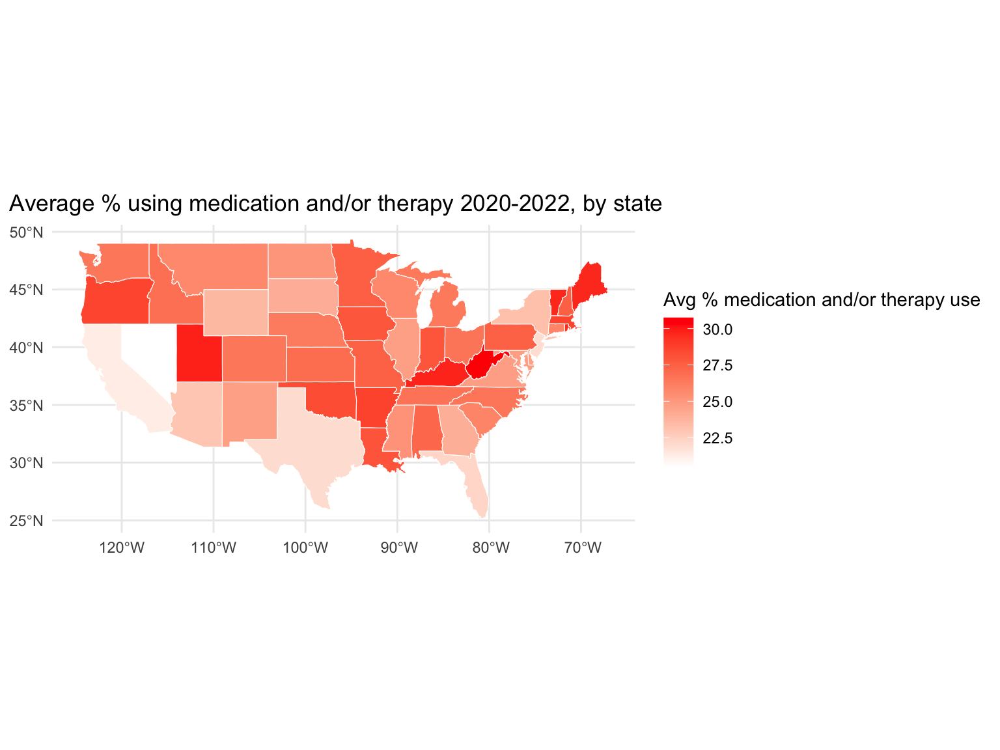
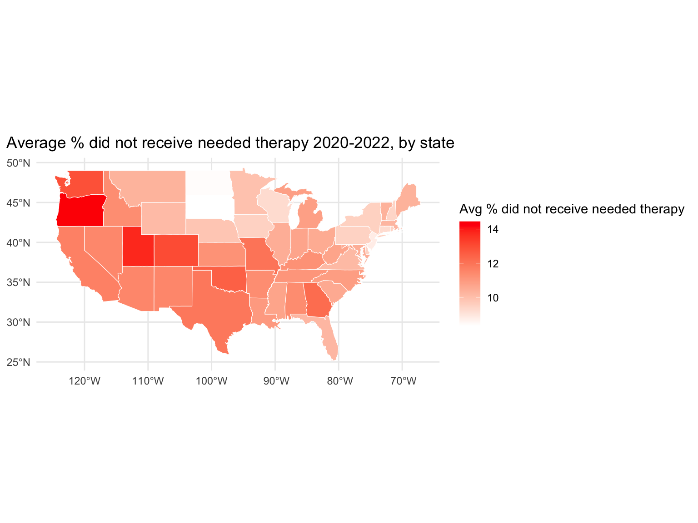
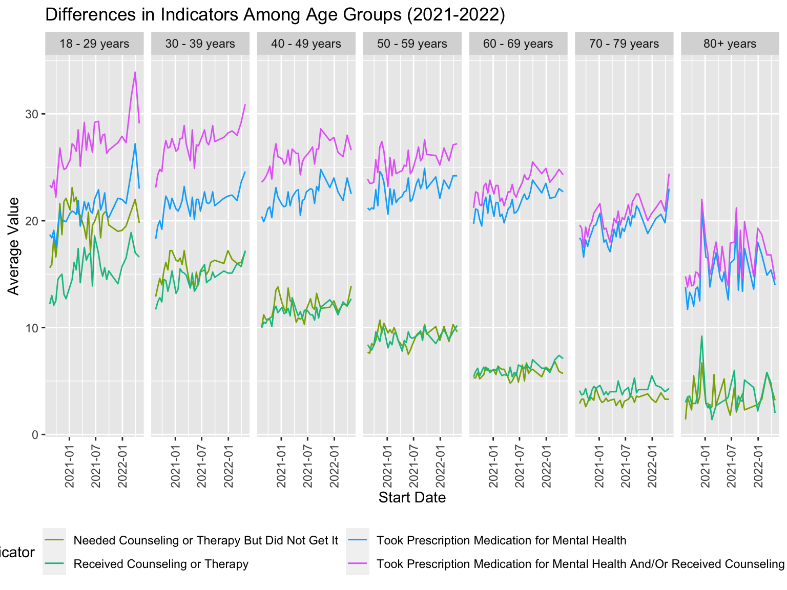
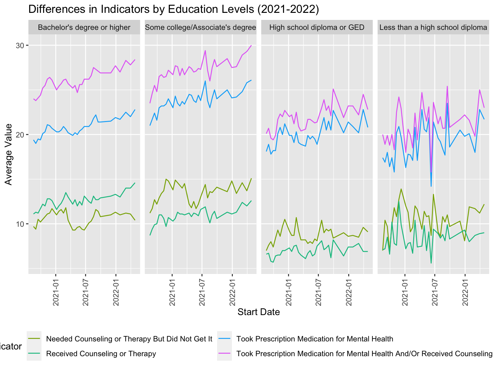
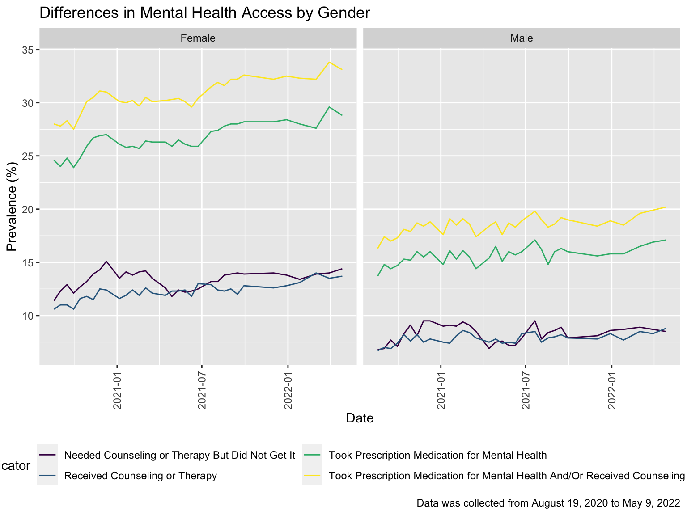
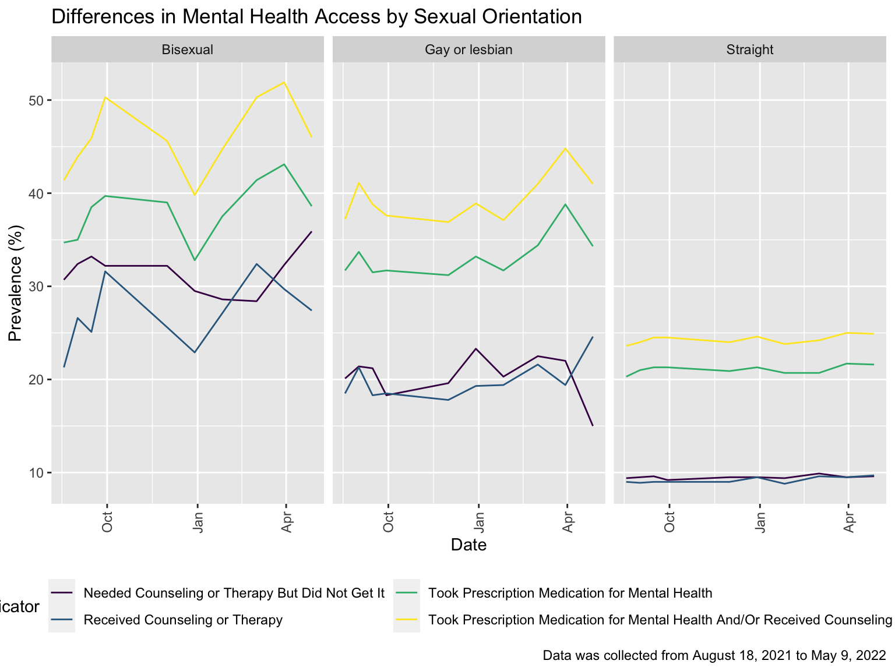

Exploratory Data Analysis (EDA)
## [1] "#440154FF" "#482878FF" "#3E4A89FF" "#31688EFF" "#26828EFF" "#1F9E89FF"
## [7] "#35B779FF" "#6DCD59FF" "#B4DE2CFF" "#FDE725FF"National Averages
avg_year =
tidydata |>
filter(state == "United States") |>
select(indicator, year, week_number, value, start_dates) |>
group_by(year, start_dates, indicator) |>
summarize(
mean = mean(value),
indicator_total = n())## `summarise()` has grouped output by 'year', 'start_dates'. You can override
## using the `.groups` argument.# plot average for each start date for each indicator
avg_year |>
ggplot(aes(x = start_dates, y = mean, color = indicator)) +
geom_point() +
labs(
x = "Start Date",
y = "Average Value",
title = "National Average (2020-2022)") +
theme(
legend.position = "bottom",
axis.text.x = element_text(angle=90, hjust=1),
strip.text = element_text(size = 4)) +
guides(color = guide_legend(nrow = 2))
On average, those who took prescription medication for mental health and/or received counseling or therapy had a highest values while those who received counseling or therapy had the lowest value.
Confidence Intervals
I relabeled the observations for the variable indicator to “received” if they did obtain the mental health services they needed and “not received” if they did not obtain the mental health services they needed.
received_service =
tidydata |>
mutate(
resolution = case_when(
indicator == "Took Prescription Medication for Mental Health" ~ "received",
indicator == "Received Counseling or Therapy" ~ "received",
indicator == "Took Prescription Medication for Mental Health And/Or Received Counseling or Therapy" ~ "received",
indicator == "Needed Counseling or Therapy But Did Not Get It" ~ "not received"))I created a data frame where I grouped by states to determine the number of total services, which includes the services received as well as the number of services not received.
states_df =
received_service |>
select(state, indicator, resolution) |>
filter(state != "United States") |>
group_by(state) |>
summarize(
services_total = n(),
services_not_received = sum(resolution == "not received"))Now, I focus on the state of New York. Using the
prop.test and broom::tidy functions, I obtain
an estimate and CI of the proportion of mental health services not
received in New York (shown in the table below).
ny_test =
prop.test(
x = filter(states_df, state == "New York") %>% pull(services_not_received),
n = filter(states_df, state == "New York") %>% pull(services_total))
broom::tidy(ny_test) %>%
knitr::kable(digits = 3)| estimate | statistic | p.value | parameter | conf.low | conf.high | method | alternative |
|---|---|---|---|---|---|---|---|
| 0.25 | 32.008 | 0 | 1 | 0.181 | 0.334 | 1-sample proportions test with continuity correction | two.sided |
I apply prop.test and broom:tidy to obtain estimates and confidence intervals for the proportion of mental health services not received for each state.
***need to add rest of code: 2 chunks for services_states
Disaggregations by State
This EDA will analyze mental health care access trends by state.
I will first create a dataframe that only includes state-level observations.
state_df =
tidydata |>
filter(group == "State")Indicator 1: Took prescription
Let’s start with the mental health indicator “Took Prescription Medication for Mental Health”
The following chunk shows the top five states with the highest mean percentage of respondents who reported taking prescription medication for mental health from 2020-2022.
state_meds_top5 =
state_df |>
filter(indicator == "Took Prescription Medication for Mental Health") |>
group_by(state) |>
summarize(mean_value = mean(value)) |>
arrange(desc(mean_value)) |>
top_n(5) ## Selecting by mean_valuestate_meds_top5 |>
knitr::kable()| state | mean_value |
|---|---|
| West Virginia | 28.84848 |
| Kentucky | 27.37879 |
| Arkansas | 26.69091 |
| Utah | 25.75455 |
| Oklahoma | 25.70909 |
Let’s visualize a heat map of this indicator’s prevalence by US state.
First, we’ll merge the filtered dataset with an existing US state map dataset to assist with mapping.
state_meds =
state_df |>
filter(indicator == "Took Prescription Medication for Mental Health") |>
group_by(state) |>
summarize(mean_value = mean(value)) |>
mutate(state = tolower(state))
usa =
st_as_sf(map("state", fill = TRUE, plot = FALSE))
us_meds =
merge(usa, state_meds, by.x = "ID", by.y = "state", all.x = TRUE)Next, we’ll plot the data using ggplot
heatmap_meds=
ggplot(us_meds)+
geom_sf(aes(fill = mean_value), color = "white", size = 0.2)+
scale_fill_gradient(low = "white", high = "red", na.value = "grey50", name = "Avg % taking prescription medications")+
theme_minimal()+
theme(legend.position = "right",
plot.title.position = "plot")+
labs(title = "Average % used prescription medication for mental health 2020-2022, by state")
print(heatmap_meds)
We can also look at which states have had the greatest change in medication use. This shows that not only does WV have the highest prevalence of medication use for mental health during this period, but it also has had the highest level of change in this indicator between 2020-2022.
state_meds_change =
state_df |>
filter(indicator == "Took Prescription Medication for Mental Health", year != "2021") |>
group_by(state, year) |>
summarize(mean_value = mean(value)) |>
arrange(state, year) |>
mutate(val_change = c(NA, diff(mean_value)))## `summarise()` has grouped output by 'state'. You can override using the
## `.groups` argument.state_meds_change |>
filter(!is.na(val_change)) |>
ungroup() |>
select(-year, -mean_value) |>
slice_max(order_by = val_change, n=5) |>
knitr::kable()| state | val_change |
|---|---|
| West Virginia | 7.044444 |
| Nebraska | 5.219444 |
| North Dakota | 5.136111 |
| Minnesota | 4.502778 |
| Kentucky | 4.452778 |
Let’s take a look at the trend for this indicator over time.
state_df |>
filter(indicator == "Took Prescription Medication for Mental Health") |>
group_by(state, year) |>
summarize(mean_value = mean(value)) |>
mutate(year = factor(year)) |>
plot_ly(x = ~year, y = ~mean_value, color = ~state, type = "scatter", mode = "lines+markers") |>
layout(
title = "% used prescription medication for mental health by state & year",
xaxis = list(title = "Year"),
yaxis = list(title = "Average % used prescription medication for mental health"))## `summarise()` has grouped output by 'state'. You can override using the
## `.groups` argument.Indicator 2: Received Counseling or Therapy
Now we’ll look at the mental health indicator “Received Counseling or Therapy”
The following chunk shows the top five states with the highest mean percentage of respondents who reported receiving counseling or therapy from 2020-2022. The state with the highest percentage during this period was District of Columbia.
state_ther_top5 =
state_df |>
filter(indicator == "Received Counseling or Therapy") |>
group_by(state) |>
summarize(mean_value = mean(value)) |>
arrange(desc(mean_value)) |>
top_n(5) ## Selecting by mean_valuestate_ther_top5 |>
knitr::kable()| state | mean_value |
|---|---|
| District of Columbia | 18.08182 |
| Massachusetts | 14.92727 |
| Rhode Island | 14.24848 |
| Vermont | 13.72121 |
| Oregon | 12.97273 |
Let’s visualize a heat map of this indicator’s prevalence by US state.
First, we’ll merge the filtered dataset with an existing US state map dataset to assist with mapping.
state_ther =
state_df |>
filter(indicator == "Received Counseling or Therapy") |>
group_by(state) |>
summarize(mean_value = mean(value)) |>
mutate(state = tolower(state))
usa =
st_as_sf(map("state", fill = TRUE, plot = FALSE))
us_ther =
merge(usa, state_ther, by.x = "ID", by.y = "state", all.x = TRUE)Next, we’ll plot the data using ggplot
heatmap_ther=
ggplot(us_ther)+
geom_sf(aes(fill = mean_value), color = "white", size = 0.2)+
scale_fill_gradient(low = "white", high = "red", na.value = "grey50", name = "Avg % receiving therapy")+
theme_minimal()+
theme(legend.position = "right",
plot.title.position = "plot")+
labs(title = "Average % receiving counseling or therapy 2020-2022, by state")
print(heatmap_ther)
We can also look at which states have had the greatest change in therapy use. This shows that NE had the highest level of change in this indicator between 2020-2022. It also had a high level of change in indicator 1
state_ther_change =
state_df |>
filter(indicator == "Received Counseling or Therapy", year != "2021") |>
group_by(state, year) |>
summarize(mean_value = mean(value)) |>
arrange(state, year) |>
mutate(val_change = c(NA, diff(mean_value)))## `summarise()` has grouped output by 'state'. You can override using the
## `.groups` argument.state_ther_change |>
filter(!is.na(val_change)) |>
ungroup() |>
select(-year, -mean_value) |>
slice_max(order_by = val_change, n=5) |>
knitr::kable()| state | val_change |
|---|---|
| Nebraska | 4.369444 |
| North Dakota | 3.922222 |
| Montana | 3.694444 |
| Oklahoma | 3.091667 |
| Delaware | 2.661111 |
Let’s take a look at the trend for this indicator over time.
state_df |>
filter(indicator == "Received Counseling or Therapy") |>
group_by(state, year) |>
summarize(mean_value = mean(value)) |>
mutate(year = factor(year)) |>
plot_ly(x = ~year, y = ~mean_value, color = ~state, type = "scatter", mode = "lines+markers") |>
layout(
title = "% received counseling or therapy by state & year",
xaxis = list(title = "Year"),
yaxis = list(title = "Average % received therapy"))## `summarise()` has grouped output by 'state'. You can override using the
## `.groups` argument.Indicator 3: “Took Prescription Medication for Mental Health And/Or Received Counseling or Therapy”
The third indicator we’ll look at combines the first two indicators into one category. This can help give a snapshot of overall mental health care need.
The following chunk shows the top five states with the highest mean percentage of respondents who reported mental health medication and/or therapy use from 2020-2022. The state with the highest percentage during this period was West Virginia.
state_both_top5 =
state_df |>
filter(indicator == "Took Prescription Medication for Mental Health And/Or Received Counseling or Therapy") |>
group_by(state) |>
summarize(mean_value = mean(value)) |>
arrange(desc(mean_value)) |>
top_n(5) ## Selecting by mean_valuestate_both_top5 |>
knitr::kable()| state | mean_value |
|---|---|
| West Virginia | 30.74242 |
| Utah | 29.82424 |
| Kentucky | 29.72121 |
| Vermont | 29.68182 |
| Maine | 29.63333 |
Let’s visualize a heat map of this indicator’s prevalence by US state.
First, we’ll merge the filtered dataset with an existing US state map dataset to assist with mapping.
state_both =
state_df |>
filter(indicator == "Took Prescription Medication for Mental Health And/Or Received Counseling or Therapy") |>
group_by(state) |>
summarize(mean_value = mean(value)) |>
mutate(state = tolower(state))
usa =
st_as_sf(map("state", fill = TRUE, plot = FALSE))
us_both =
merge(usa, state_both, by.x = "ID", by.y = "state", all.x = TRUE)Next, we’ll plot the data using ggplot
heatmap_both=
ggplot(us_both)+
geom_sf(aes(fill = mean_value), color = "white", size = 0.2)+
scale_fill_gradient(low = "white", high = "red", na.value = "grey50", name = "Avg % medication and/or therapy use")+
theme_minimal()+
theme(legend.position = "right",
plot.title.position = "plot")+
labs(title = "Average % using medication and/or therapy 2020-2022, by state")
print(heatmap_both)
We can also look at which states have had the greatest change in mental health care use. This shows that WV had the highest level of change in this indicator between 2020-2022. This makes sense, as WV had the highest change in medication use.
state_both_change =
state_df |>
filter(indicator == "Took Prescription Medication for Mental Health And/Or Received Counseling or Therapy", year != "2021") |>
group_by(state, year) |>
summarize(mean_value = mean(value)) |>
arrange(state, year) |>
mutate(val_change = c(NA, diff(mean_value)))## `summarise()` has grouped output by 'state'. You can override using the
## `.groups` argument.state_both_change |>
filter(!is.na(val_change)) |>
ungroup() |>
select(-year, -mean_value) |>
slice_max(order_by = val_change, n=5) |>
knitr::kable()| state | val_change |
|---|---|
| West Virginia | 7.155556 |
| North Dakota | 6.500000 |
| Nebraska | 5.747222 |
| Minnesota | 4.850000 |
| Oklahoma | 4.736111 |
Let’s take a look at the trend for this indicator over time.
state_df |>
filter(indicator == "Took Prescription Medication for Mental Health And/Or Received Counseling or Therapy") |>
group_by(state, year) |>
summarize(mean_value = mean(value)) |>
mutate(year = factor(year)) |>
plot_ly(x = ~year, y = ~mean_value, color = ~state, type = "scatter", mode = "lines+markers") |>
layout(
title = "% medication and/or therapy use by state & year",
xaxis = list(title = "Year"),
yaxis = list(title = "Average % medication and/or therapy use"))## `summarise()` has grouped output by 'state'. You can override using the
## `.groups` argument.Indicator 4: Needed Counseling or Therapy But Did Not Get It
The last indicator we’ll look at is describes gaps in mental health care access, specifically counseling and therapy.
The following chunk shows the top five states with the highest mean percentage of respondents who reported no receipt of needed counseling/therapy from 2020-2022. The state with the highest percentage during this period was Oregon. Surprisingly, District of Columbia also appeared on the top 5, even though it was the “state” with the highest level of therapy use during this period.
state_need_top5 =
state_df |>
filter(indicator == "Needed Counseling or Therapy But Did Not Get It") |>
group_by(state) |>
summarize(mean_value = mean(value)) |>
arrange(desc(mean_value)) |>
top_n(5) ## Selecting by mean_valuestate_need_top5 |>
knitr::kable()| state | mean_value |
|---|---|
| Oregon | 14.43939 |
| Utah | 13.77879 |
| District of Columbia | 13.67273 |
| Colorado | 13.02727 |
| Washington | 12.89697 |
Let’s visualize a heat map of this indicator’s prevalence by US state.
First, we’ll merge the filtered dataset with an existing US state map dataset to assist with mapping.
state_need =
state_df |>
filter(indicator == "Needed Counseling or Therapy But Did Not Get It") |>
group_by(state) |>
summarize(mean_value = mean(value)) |>
mutate(state = tolower(state))
usa =
st_as_sf(map("state", fill = TRUE, plot = FALSE))
us_need =
merge(usa, state_need, by.x = "ID", by.y = "state", all.x = TRUE)Next, we’ll plot the data using ggplot
heatmap_need=
ggplot(us_need)+
geom_sf(aes(fill = mean_value), color = "white", size = 0.2)+
scale_fill_gradient(low = "white", high = "red", na.value = "grey50", name = "Avg % did not receive needed therapy")+
theme_minimal()+
theme(legend.position = "right",
plot.title.position = "plot")+
labs(title = "Average % did not receive needed therapy 2020-2022, by state")
print(heatmap_need)
We can also look at which states have had the greatest change in unmet mental health care need. This shows that AK had the highest level of change in this indicator between 2020-2022.
state_need_change =
state_df |>
filter(indicator == "Needed Counseling or Therapy But Did Not Get It", year != "2021") |>
group_by(state, year) |>
summarize(mean_value = mean(value)) |>
arrange(state, year) |>
mutate(val_change = c(NA, diff(mean_value)))## `summarise()` has grouped output by 'state'. You can override using the
## `.groups` argument.state_need_change |>
filter(!is.na(val_change)) |>
ungroup() |>
select(-year, -mean_value) |>
slice_max(order_by = val_change, n=5) |>
knitr::kable()| state | val_change |
|---|---|
| Arkansas | 3.127778 |
| Wyoming | 2.694444 |
| South Dakota | 2.538889 |
| Texas | 2.363889 |
| Wisconsin | 2.308333 |
Let’s take a look at the trend for this indicator over time.
state_df |>
filter(indicator == "Needed Counseling or Therapy But Did Not Get It") |>
group_by(state, year) |>
summarize(mean_value = mean(value)) |>
mutate(year = factor(year)) |>
plot_ly(x = ~year, y = ~mean_value, color = ~state, type = "scatter", mode = "lines+markers") |>
layout(
title = "% did not receive needed therapy by state & year",
xaxis = list(title = "Year"),
yaxis = list(title = "Avg % did not receive needed therapy"))## `summarise()` has grouped output by 'state'. You can override using the
## `.groups` argument.Discussion
After analysis of the four indicators by state, we found the lowest prevalence of mental health care use in some of the most populous US states: California, New York, Texas, and Florida. Medication use prevalence was highest in West Virginia, Kentucky, Arkansas, Utah, and Oklahoma. Except for Utah, these states have high rates of poverty and low [median household income] (https://www.kff.org/other/state-indicator/median-annual-income/?activeTab=map¤tTimeframe=0&selectedDistributions=median-annual-household-income&sortModel=%7B%22colId%22:%22Location%22,%22sort%22:%22asc%22%7D), which could drive higher rates of mental health medication use.
Therapy use was highest in District of Columbia, Massachusetts, Rhode Island, Vermont, and Oregon. These states have high levels of educational attainment which could mean that their populations have more positive perceptions of therapy. That said, the greatest change in therapy use during the pandemic was in more rural states with lower median household income, like Nebraska and North Dakota. It’s possible that these were states that particularly benefited from expansions in telehealth for providing therapy. When medication and therapy indicators are combined to indicate overall mental health burden, West Virginia, Utah, and Kentucky remain the highest, but are joined by Vermont and Maine. Vermont, Maine, and Utah all have high median household income, which suggests ruralness rather than income levels may drive mental health burden at the state level.
Interestingly, the states with the highest prevalence of unmet therapy needs also tended to have a higher prevalence of therapy use. This could indicate that demand for therapy outpaced supply of mental health care providers even with the expansion of telehealth during the pandemic. However, West Virginia, which had a high prevalence of medication use, did not have high unmet therapy needs. This could mean that in certain states, medication use is not tied to therapy use.
Disaggregations by Demographics
Age group
I started by filtering the tidy dataset to only include age and residence in the United States. Then, I renamed the “80 years and above” subgroup to 80+ years. Afterward, I plotted the age group graph; however, because the start_date variable overlapped, the legend was difficult to view when I plotted the graph. As a result, I rotated the x-axis labels vertically and stacked the legend to two columns.
#Filtering the dataset to age and united states
age_plot <- tidydata |>
filter(group == "Age", state == "United States")
#Renaming the "80 years and above" subgroup to 80+ years
age_plot$subgroup[age_plot$subgroup == "80 years and above"] = "80+ years"
#Ploting the age group
age_plot |>
group_by(indicator, start_dates, subgroup) |>
ggplot(aes(x = start_dates, y = value, color = indicator)) +
geom_line() +
facet_grid(. ~ subgroup) +
labs(
x = "Start Date",
y = "Average Value",
title = "Differences in Indicators Among Age Groups (2021-2022)") +
theme_gray() +
theme(
legend.position = "bottom",
axis.text.x = element_text(angle = 90, vjust = 0.5, hjust = 1) # Rotate x-axis labels vertically
) +
scale_color_hue(h = c(100, 300)) +
guides(color = guide_legend(nrow = 2)) # Adding the legend guide adjustment
Critical findings:
Based on the graph, it is clear that among the age groups, 18-29 have the highest values across all the indicators. Especially for the indicator of taking prescription medication for mental health and or receiving counseling, followed by the 30-39 age group, then 40-49 years. Since the data is captured from 2021 to 2022 during the pandemic, lockdown and transition to a virtual environment might cause tremendous pressure on these age groups. In addition, limited access to social life might burden the 18-29 age group. In addition, it is surprising to see that age groups from 60 and above have the lowest values of needed counseling or therapy but did not get it and received counseling or therapy. Maybe many of them are in their retirement, or this age group has a stigma around mental health because they might have a negative impression about having mental health issues. Therefore, they are less likely to admit they need counseling or therapy.
Education level
I began by filtering the tidy dataset to only age and participants residing in the United States. In the next step, I re-leveled the education subgroup by creating a new variable, ed_name. Afterward, I used the new variable, ed_name, to create an education plot. Similar to the age plot, the x-axis labels and legend are difficult to view. So, I adjusted the x-axis labels to vertical and stacked the legend columns into two columns.
#Filtering the dataset to age and united states, re-level the subgroup, and plot the education plot
ed_plot=
tidydata |>
filter(group == "Education", state == "United States") |>
mutate(ed_name = forcats::fct_relevel(subgroup, c("Bachelor's degree or higher",
"Some college/Associate's degree", "High school diploma or GED", "Less than a high school diploma"))) |>
group_by(start_dates, ed_name, indicator) |>
ggplot(aes(x = start_dates, y = value, color = indicator)) +
geom_line() +
facet_grid(. ~ ed_name) +
labs(
x = "Start Date",
y = "Average Value",
title = "Differences in Indicators by Education Levels (2021-2022)") +
theme_gray() +
theme(
legend.position = "bottom",
axis.text.x = element_text(angle = 90, vjust = 0.5, hjust = 1) # Rotate x-axis labels vertically
) +
scale_color_hue(h = c(100, 300)) +
guides(color = guide_legend(nrow = 2)) # Adding the legend guide adjustment
#View the education plot
ed_plot
Critical findings:
Among four education groups, the bachelor’s degree or higher and some college/ associate’s degree groups have the highest value of taking prescription medication for mental health and/or received counseling. This is because individuals with higher education typically have better jobs, more money, and many other benefits, including better health insurance, which leads to better access to quality mental health services than those with a lower education level. On the other hand, those who have a lower education level (high school diploma or GED and less than high school diploma groups) have the least value of needed counseling or therapy but did not get it and received counseling or therapy indicators because they might not have adequate resources to the services which resulting having the lowest values in term of the utilization of the counseling services.
Gender
Trends in mental health access by gender were stark. Women reported needing almost twice as much counseling or therapy for mental health as men, and these trends were consistent from 2020 to 2022.
Women took more prescription medication for mental health and received more counseling or therapy for mental health than men. These trends slightly increased each year from 2020 to 2022.

Sexual Orientation
Mental health access strongly differed by sexual orientation. Bisexual Americans reported the highest trends in both taking prescription medication and/or receiving counseling for mental health and needing counseling or therapy but not receiving it. Their outcomes showed the most variation over time. Straight Americans consistently reported the least unmet need for counseling or therapy.

Race/ethnicity
The graph below explores differences in outcome variables by race/ethnicity. Trends by racial and ethnic groups were stark across all three years. Non-Hispanic Multiracial Americans, closely followed by non-Hispanic White Americans, received the most prescription medication and/or counseling or therapy for mental health. However, non-Hispanic multiracial Americans needed counseling or therapy for mental health but did not receive it.